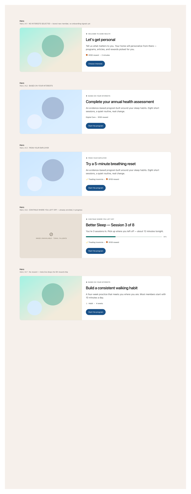

The featured-program card at the top of the home page. Image-left, content-right on desktop; stacks on mobile. Five variants covering the meaningful states: brand-new member with no signals yet, interest-driven recommendation, employer-driven recommendation, in-progress program, and no-reward (habit) variant.
View in FigmaAll five variants share the same shell (rounded card, image panel on the left, body on the right with eyebrow + title + meta + CTA). What changes is the eyebrow / copy / meta line / progress treatment.

WELCOME TO ACME HEALTH, title "Let's get personal", reward chip + duration, CTA Choose interests.BASED ON YOUR INTERESTS, meta line "Digital Care · $100 reward", CTA Start the program.FROM YOUR EMPLOYER, meta line includes a small icon next to the program name + $ chip.Start the program.The fragments shipping today use the 4.2 (interests-driven) variant. Other variants are the same shell with different body content — swap eyebrow / title / meta / CTA copy.
<section class="hero" aria-labelledby="hero-title">
<div class="hero__media" aria-hidden="true"></div>
<div class="hero__content">
<span class="hero__eyebrow">
<span class="fa-icon" aria-hidden="true"></span>
BASED ON YOUR INTERESTS
</span>
<h2 id="hero-title" class="heading-4 hero__title">Treating Insomnia</h2>
<p class="paragraph-2 hero__desc">
An evidence-based program built around your sleep habits.
Eight short sessions, a quiet routine, real change.
</p>
<div class="hero__meta caption ink-soft">
<span>Treating Insomnia</span>
<span class="dot"></span>
<span>Digital Care</span>
</div>
<a class="btn btn-m btn-filled" href="/programs/sleep/start">Start the program</a>
</div>
</section>
.hero__media). When production photography lands, swap to <img> with explicit width, height, alt..progress / .progress__fill classes already used by Keep going.